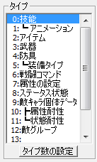
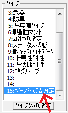
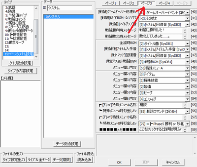
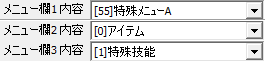
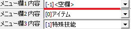
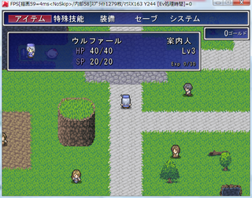

ユーザーデータベース
右のようなウィンドウが表示されます。

【目標】
メニュー画面を開くと出てくる、「相談」コマンドを消します。
| ↓ |
| 【1】 ユーザーデータベース 右のようなウィンドウが表示されます。 |
|
| 【2】 ウィンドウが開いた直後は 「タイプ」が「技能」になっています。 「15:ﾍﾞｰｽｼｽﾃﾑ設定」をクリックしてください。 |
 |
→ |  |
| 【3】 右上にある、「ページ３」を 選択してください。 |
 |
| 【4】 「メニュー欄1内容」を 「[55]特殊メニューA」から「[-1]<空欄>」に 変更してください。 |
 |
| ↓ | |
 |
| 【5】 テストプレイ 右の画像のように、メニューから 「相談」コマンドが消えたら成功です。 おつかれさまでした。 |
 |
＜執筆者：コロラル＞